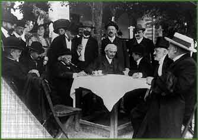

Queen of Sheba, in his birthplace, Keszthely.
| A piece from the opera The Queen of Sheba, performed by the Choir of the Budapest Tomkins Ensemble. |
|  | ||||
|
Károly Goldmark, composer of the world famous opera The Queen of Sheba, in his birthplace, Keszthely. |
||||
| ||||